高雄市立民生醫院 護理科電子白板系統｜後台建立順序、資料關聯、前後台對照（含截圖）
「人員管理」是跨單位的人員主檔，一處建立全院護理／醫療人員，供四站（W52／ICU／OR／ER）共用，並作為下列功能的單一資料來源：
排班（白／小夜／大夜） 主護勾床 / 醫師-床指派 查房時間表 護理交班 照護團隊 後台登入權限
建立邏輯由左至右：先有人員，指派單位角色，再掛上排班／指派／查房／交班；前台各頁籤即時組裝顯示。
前台頁籤對應：②→照護團隊（依分組）；③＋④→排班資訊（負責床位）；④＋⑤→醫師資訊；⑥→護理交班。
進入後台 /admin → 左側選單「人員管理」。請依下列順序建立，後項依賴前項。
於登入頁輸入員編（管理員請用 ADMIN）。系統依該員權限決定可管理的單位；無管理權限者無法進入後台。
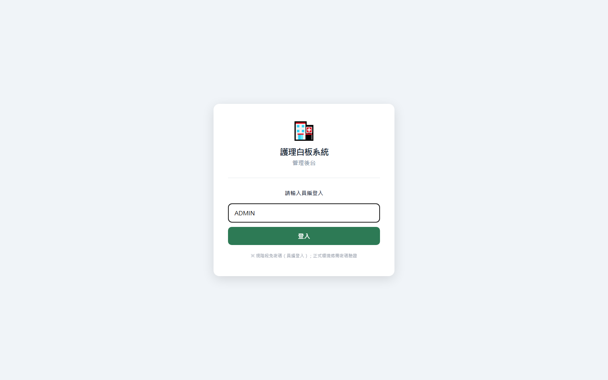
「人員管理 → 人員主檔」新增每位人員的 員編（登入帳號，需唯一）、姓名、分機、手機。勾「系統管理員」者可管理全部單位。
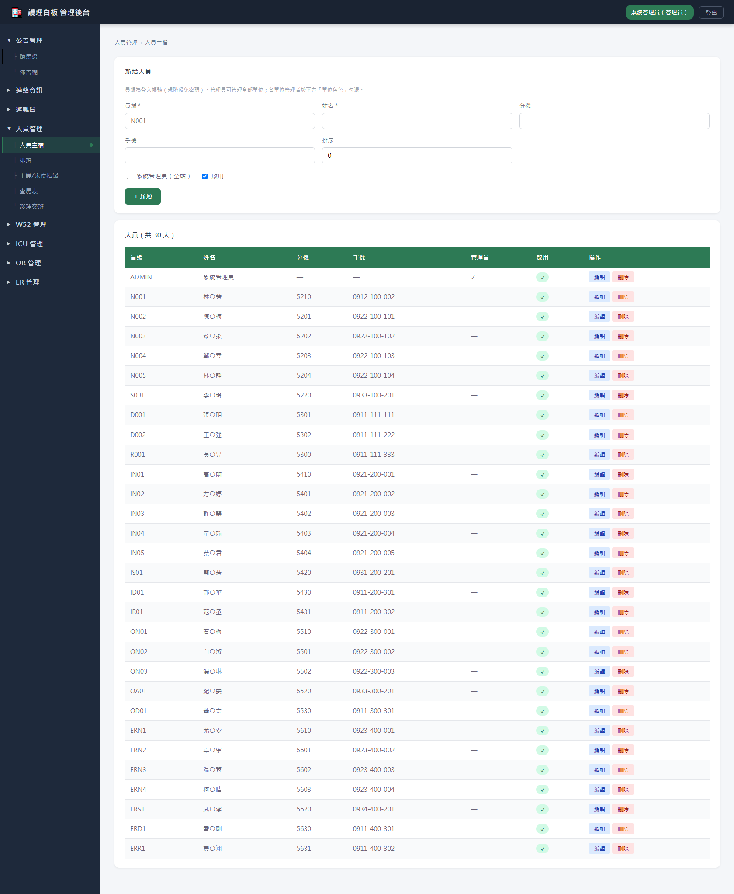
在人員清單點「編輯」，下方出現該員的單位角色面板。設定 單位、職別、科別/專長、照護團隊分組；勾選 該區管理者 即賦予該單位的後台管理權限。一人可加入多列（多單位多角色）。
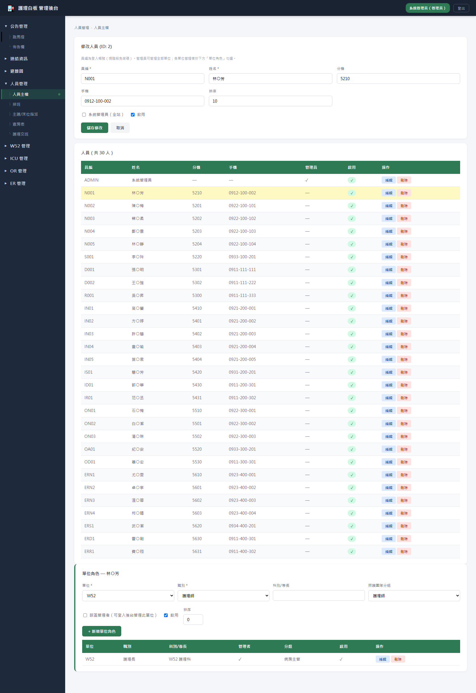
「照護團隊分組」決定其顯示在前台照護團隊的哪一組（病房主管／主治／住院／專師／護理師／醫事）。
「排班」選單位與日期，為人員指定班別，可填緊急編組與點班。人員由下拉選取（來自人員主檔）。
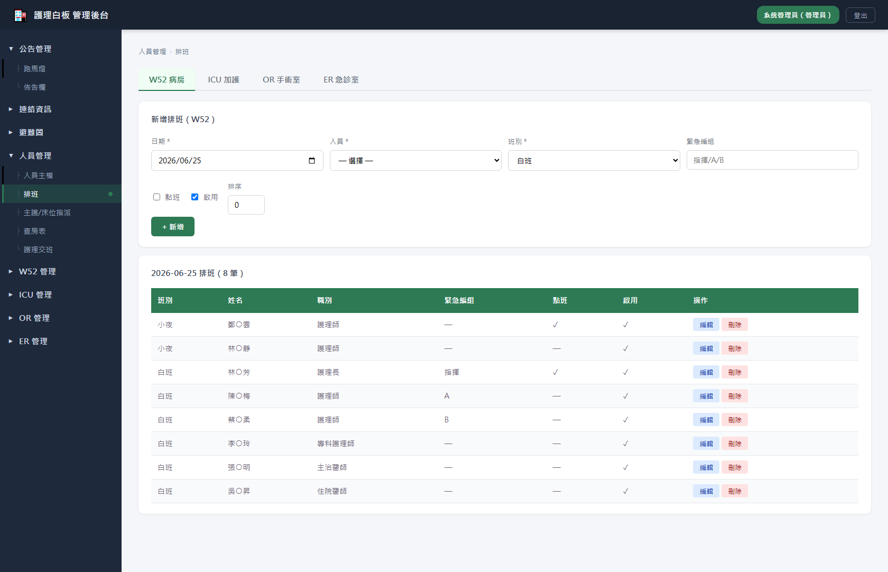
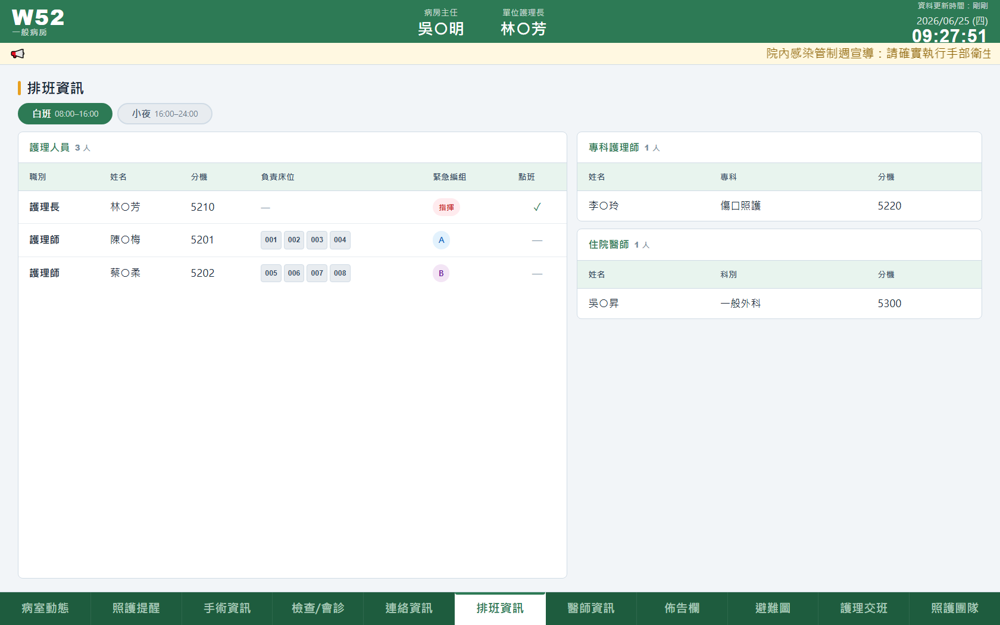
「主護/床位指派」設定床號 ↔ 人員。類型 主護＝護理師勾床（彙整為排班的「負責床位」）；主治／專師＝醫師-床（顯示於醫師資訊）。人員以下拉選取。
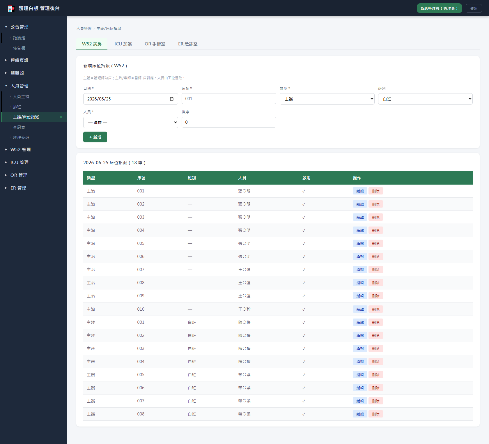
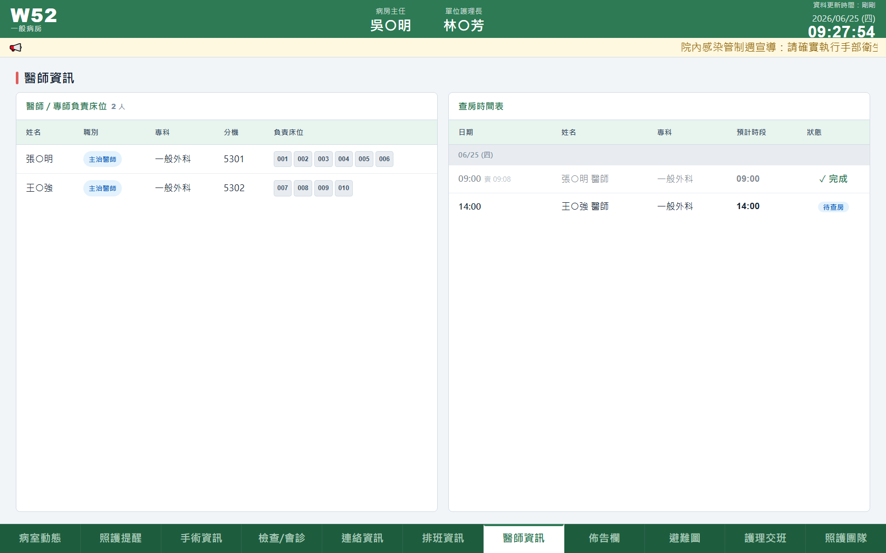
同一份指派：主護→前台「排班資訊」的負責床位；主治→前台「醫師資訊」的負責床位。
「查房表」建立當日查房：可選人員（醫師）或填顯示姓名，含專科、預定／實際時間、是否完成。
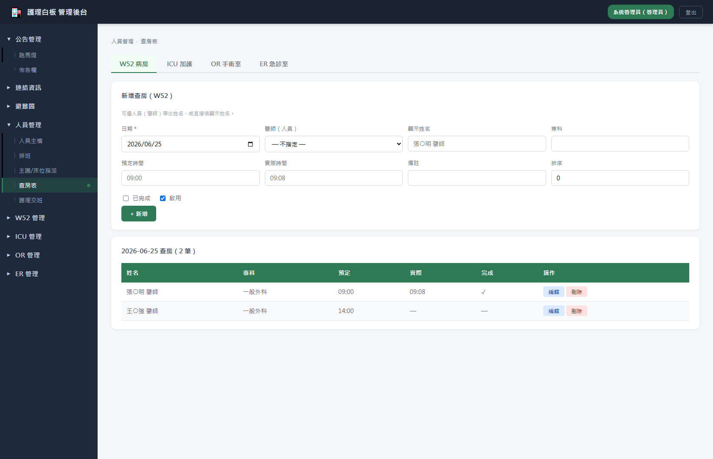
「護理交班」先建立交班 header（交/接班別、時間、交班/接班護理師勾選）；再點該筆「病人卡」逐床建立病人交班卡，每卡可加分類事項（管路/用藥/警示/感控/待辦…）。
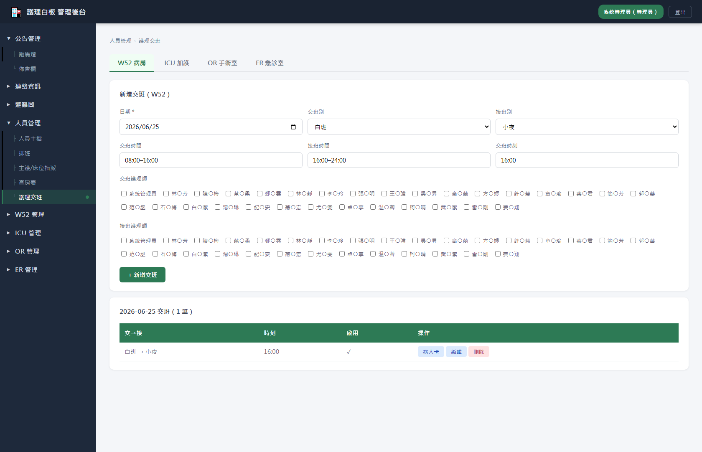
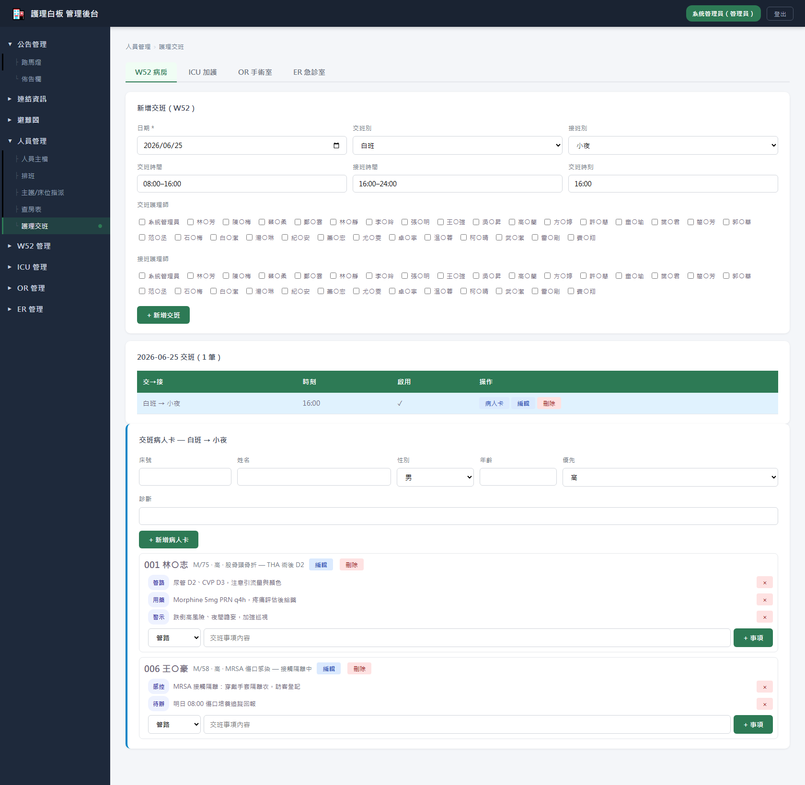
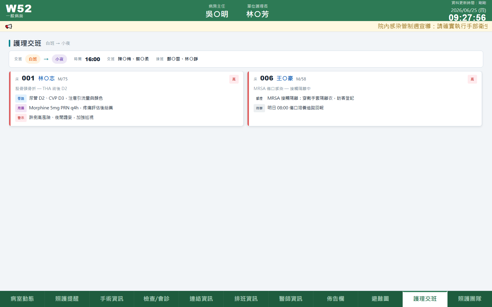
前台「照護團隊」直接由步驟 3 的單位角色依「分組」組成，不需另外維護。新增/調整人員的單位角色即同步反映。
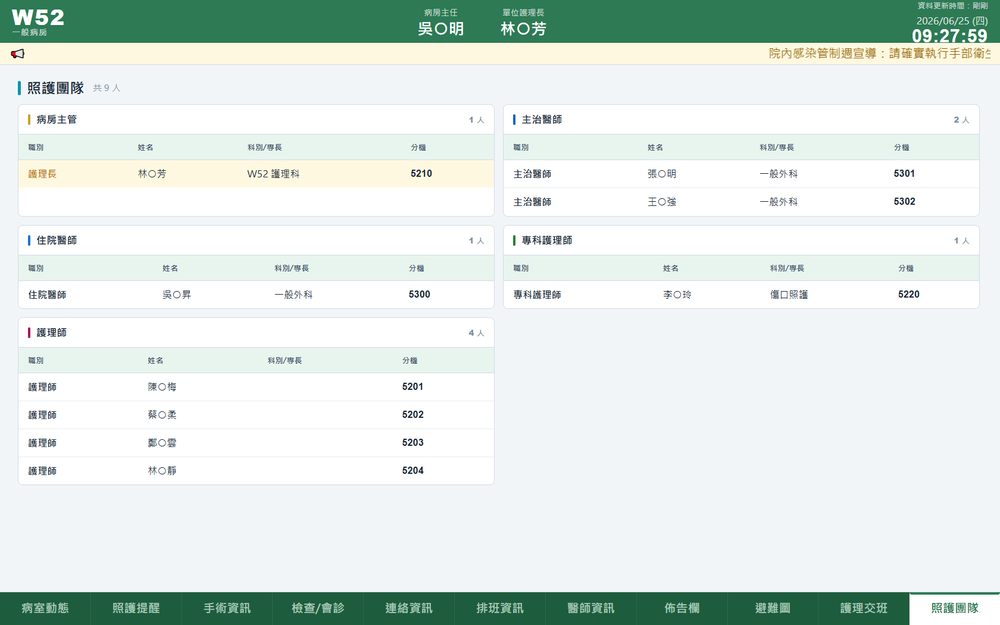
| 後台建立項目 | 關鍵欄位 | 前台顯示位置 |
|---|---|---|
| 人員主檔 | 員編、姓名、分機、手機 | 各頁籤的姓名／分機來源 |
| 單位角色 | 單位、職別、分組、該區管理者 | 照護團隊（依分組）；登入權限 |
| 排班 | 班別、緊急編組、點班 | 排班資訊（班別切換、護理/專師/住院） |
| 主護/床位指派（主護） | 床號、人員 | 排班資訊→護理師「負責床位」 |
| 主護/床位指派（主治） | 床號、人員 | 醫師資訊→醫師「負責床位」 |
| 查房表 | 專科、預定/實際時間、完成 | 醫師資訊→查房時間表 |
| 護理交班 | 交/接班、護理師、病人卡、事項 | 護理交班（橫條＋病人卡） |
ADMIN。N001（W52）、IN01（ICU）、ON01（OR）、ERN1（ER）。© 高雄市立民生醫院 護理科電子白板系統 — 人員管理操作說明